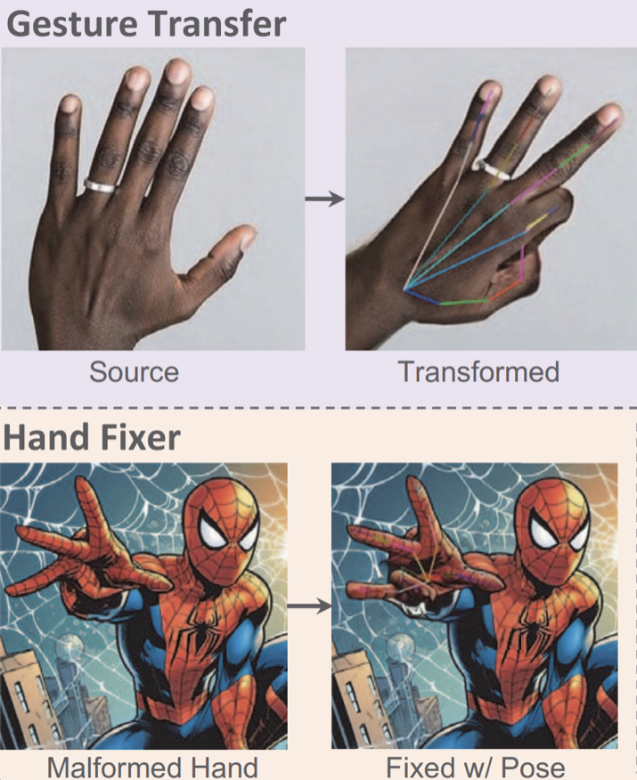
Linguang Zhang (張臨光)
Ph.D. in Computer Science
Meta Reality Labs, Redmond, WA |
|
Google Scholar
I am a Research Scientist at Meta Reality Labs. My work focuses on computer vision, including real-time on-device egocentric hand/body tracking and efficient generative models. I received my Ph.D. in Computer Science from Princeton University, where I worked with Prof. Szymon Rusinkiewicz. Before that, I earned my B.Eng. in Computer Engineering from HKUST, advised by Prof. Chi-Keung Tang.
Publications
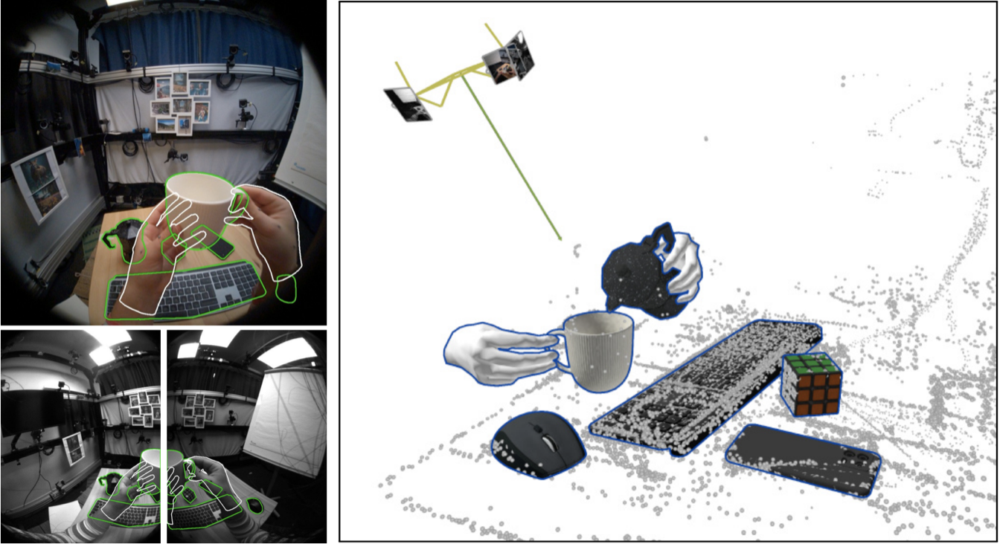
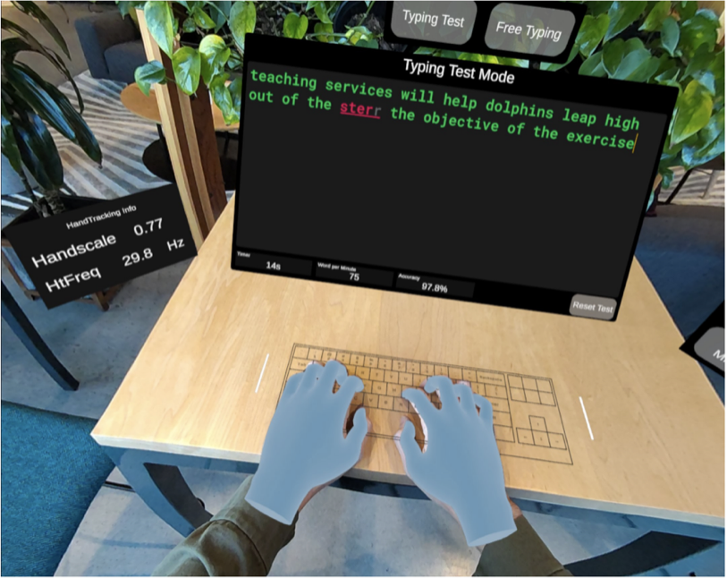
StegoType: Surface Typing from Egocentric Cameras
ACM Symposium on User Interface Software and Technology (UIST), 2024
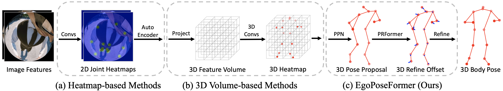
EgoPoseFormer: A Simple Baseline for Stereo Egocentric 3D Human Pose Estimation
European Conference on Computer Vision (ECCV), 2024
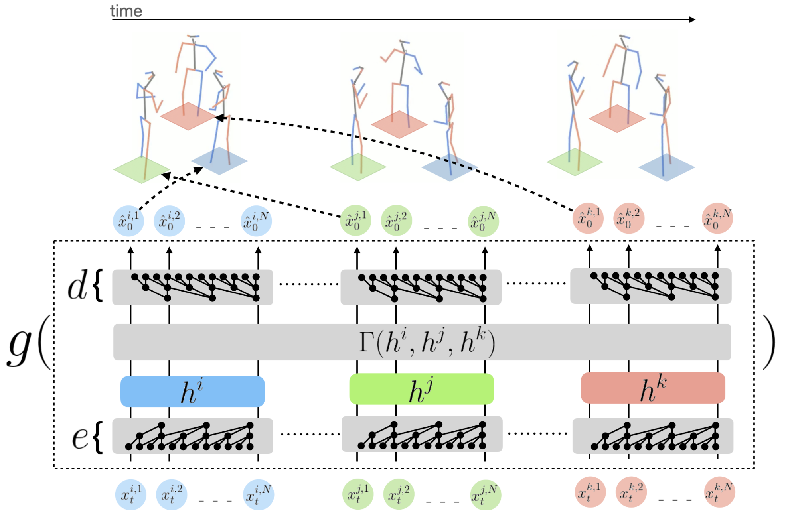
Social Diffusion: Long-Term Multiple Human Motion Anticipation
IEEE/CVF International Conference on Computer Vision (ICCV), 2023
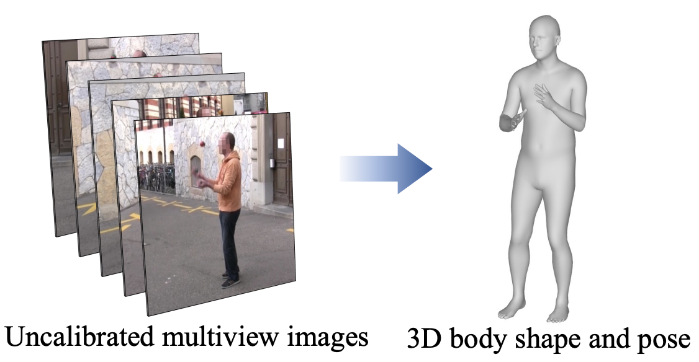
Multiview Human Body Reconstruction from Uncalibrated Cameras
Advances in Neural Information Processing Systems (NeurIPS), 2022
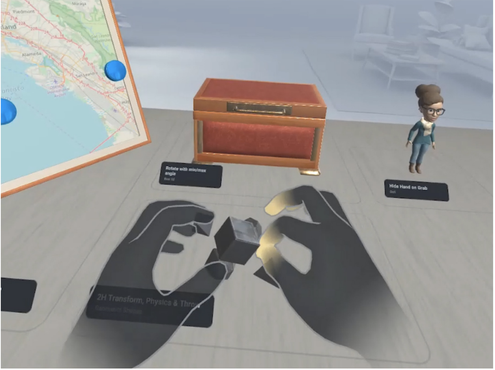
UmeTrack: Unified Multi-View End-to-End Hand Tracking for VR
SIGGRAPH Asia Conference Papers, 2022
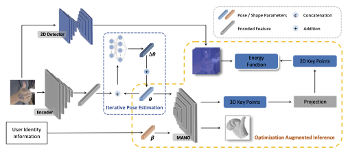
Identity-Aware Hand Mesh Estimation and Personalization from RGB Images
European Conference on Computer Vision (ECCV), 2022
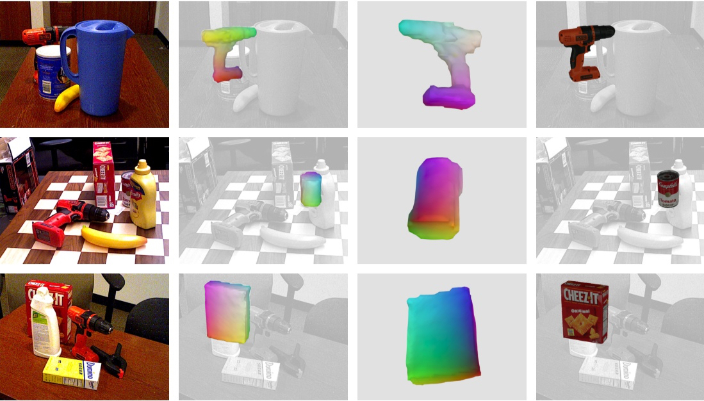
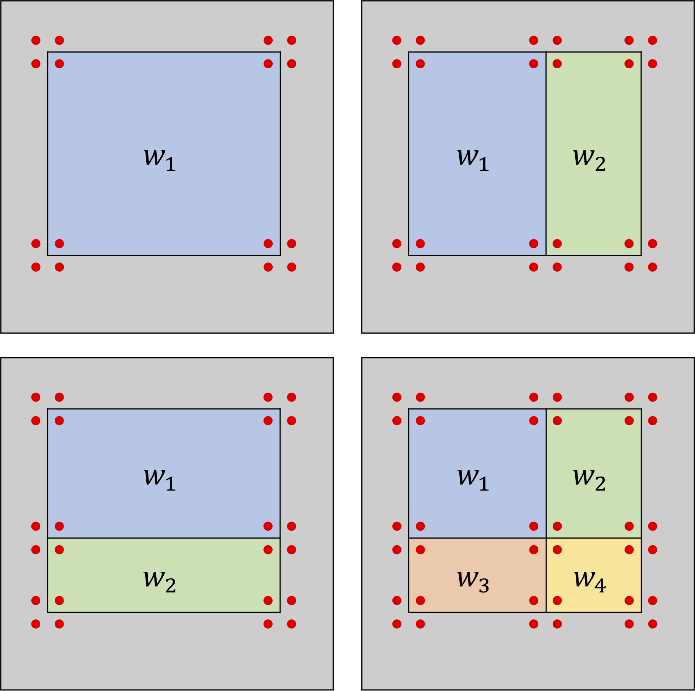
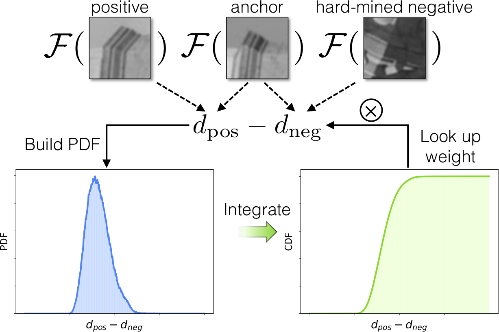
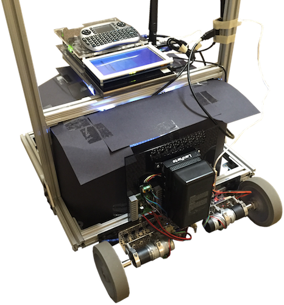
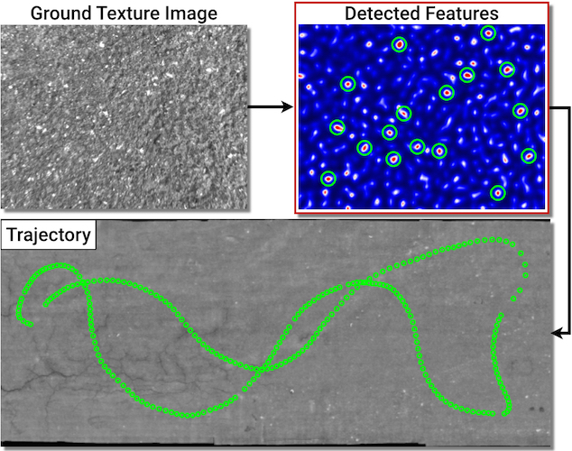
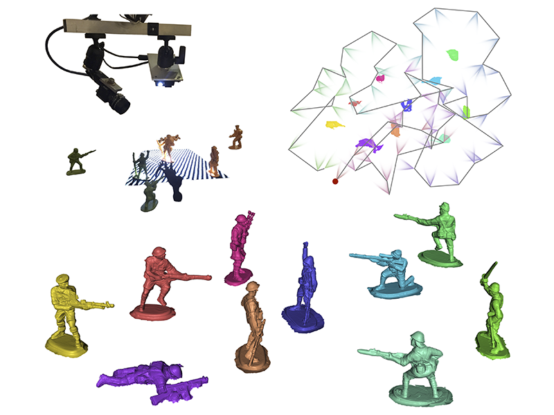
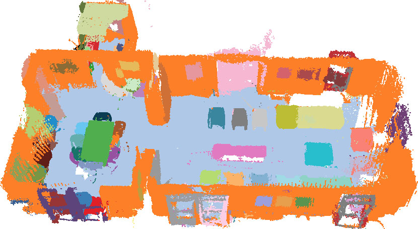
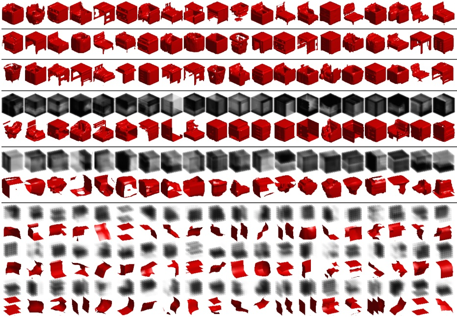
Work Experience
Meta Reality Labs
Senior Staff Research Scientist, 2019~Now
Facebook Reality Labs (Oculus Research)
Research Intern, 2018
NVIDIA - Visual Computing Research
Research Intern, 2016
Intel - Visual Computing Lab
Research Intern, 2015
Lenove Research HK
Intern, 2014
DJI
Intern, 2014